Ứng Dụng UAV Phun Vi Hạt Tích Điện Kiểm Soát Soiling PV
Soiling có thể gây tổn thất năng lượng PV trung bình 4–7% trên toàn cầu. Dịch vụ S0299 kết hợp khảo sát ban đầu, xử lý theo phương án được phê duyệt, đánh giá trước–sau và báo cáo có truy vết chuẩn IEC 61724-1.
Vấn Đề Soiling & Bụi Mịn Trên Hệ Thống Quang Điện
Bụi bám (soiling) và vật chất dạng hạt khí quyển làm giảm đáng kể khả năng thu nhận bức xạ của module PV nếu không có phương án đánh giá và làm sạch phù hợp.
Suy Giảm Năng Suất Phát Điện
Tổn thất do soiling trung bình toàn cầu từ 4–7%, đặc biệt ở vùng ô nhiễm nặng hoặc mùa khô có thể làm suy giảm hiệu suất phát điện nghiêm trọng (IEA PVPS T13-21).
Nguồn: SRC-10, SRC-11Aerosol vs Bụi Bám Bề Mặt
PM2.5 trong khí quyển làm suy giảm bức xạ tới, còn soiling là bụi bám bề mặt. Hai cơ chế khác nhau cần phương pháp đo lường và đánh giá tách biệt.
Nguồn: SRC-12, SRC-13Ràng Buộc Khắt Khe Từ Manual OEM
Trina, First Solar, Canadian Solar quy định nghiêm ngặt về pH (6–8), độ cứng CaCO3 (≤600mg/L), TDS (<1500mg/L), áp lực (≤4MPa/35bar) và chênh nhiệt (≤20°C).
Nguồn: SRC-32, SRC-33, SRC-34Thiếu Dữ Liệu Quyết Định Chu Kỳ Vệ Sinh
Chưa có một chu kỳ vệ sinh tối ưu chung cho Việt Nam. Việc can thiệp cần dựa trên dữ liệu soiling ratio thực tế theo mùa và địa bàn cụ thể.
Nguồn: SRC-09, G6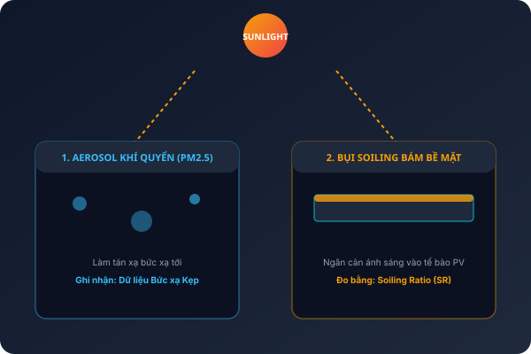
Bảng Thông Số Kỹ Thuật Nước & Áp Lực Theo OEM Manual
GASCOLAE cài đặt ngưỡng vận hành phun chính xác theo tài liệu chỉ dẫn kỹ thuật từng dòng tấm pin (Trina Solar, First Solar, Canadian Solar).
Trina Solar
Vertex Series ManualFirst Solar
Series 4 Cleaning NoteCanadian Solar
Standard Installation ManualCông Nghệ UAV Phun Vi Hạt Tích Điện S0299
Sử dụng UAV đa rotor mang hệ phun vi hạt tĩnh điện không tiếp xúc cơ học, kết hợp khảo sát baseline và đo soiling ratio chuẩn hóa.
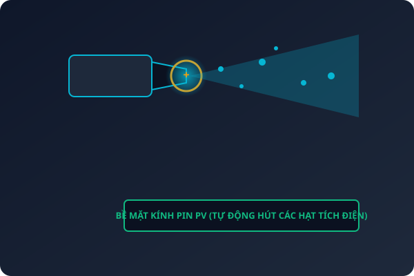
Nền Tảng UAV Hạng Nặng & GNSS RTK
Định vị động chính xác cỡ milimet/centimet, đảm bảo tuyến bay ổn định theo ranh giới và layout dãy module đã được thiết kế sẵn (SRC-26).
Hệ Phun Vi Hạt Nước / Dung Dịch Tích Điện
Tạo các vi hạt sương được tích điện tĩnh, hỗ trợ tăng khả năng bám dính và tiếp cận bụi mịn trên bề mặt kính mà không cần chà xát cơ học (SRC-17).
Đo Soiling Ratio Theo IEC 61724-1:2021
Thu thập dữ liệu baseline trước–sau, tính toán tỷ số soiling (SR) minh bạch, giúp chủ đầu tư theo dõi hiệu quả thực tế có bằng chứng (SRC-21).
Minh Bạch Ranh Giới Bằng Chứng & Điều Kiện Kỹ Thuật (G1–G6)
- G1 (Giá): Bảng giá báo khách do Sales/Finance chốt; AI không tự ý báo giá cố định.
- G2 (Cấu hình): BOM payload, bình/bơm/đầu phun chính thức cần Technical thử tải & nghiệm thu.
- G3 (Hiệu quả): Tỷ lệ phục hồi thực tế được kiểm chứng qua thử nghiệm khu vực kiểm soát tại site.
- G4 (Pháp lý): Hoạt động bay tuân thủ Luật 49/2024/QH15 & NĐ 288/2025/NĐ-CP; cơ quan thẩm quyền cấp phép.
- G5 (Module/AR): Chất lượng nước/áp lực đối chiếu đúng manual OEM của Trina, First Solar, Canadian Solar.
Mô Phỏng Phun Tĩnh Điện & Đồ Thị Phục Hồi Năng Suất
Trải nghiệm tương tác mô phỏng cơ chế hạt vi tĩnh điện bám dính và biểu đồ hiệu quả Soiling Ratio theo IEC 61724-1.
Mô Phỏng Vi Hạt Phun Tĩnh Điện (Canvas)
Đồ Thị Soiling Ratio (SR) Trước & Sau Xử Lý
5 Use Cases Chuẩn Hóa Của Dịch Vụ S0299
Được thiết kế linh hoạt cho các giai đoạn khảo sát, xử lý theo đợt và theo dõi O&M định kỳ.
Khảo Sát Baseline & Đánh Giá Soiling Ratio Ban Đầu
Thực hiện ghi nhận hiện trạng bề mặt module, thu thập chỉ số Soiling Ratio nền trước khi quyết định can thiệp làm sạch.
- Input: Layout ranh giới, model module, lịch sử sản lượng nếu có.
- Phương pháp: Quan sát và đo soiling ratio chuẩn IEC 61724-1.
- Output: Deliverables D1, D3, D4, D7 (Báo cáo baseline & giới hạn).
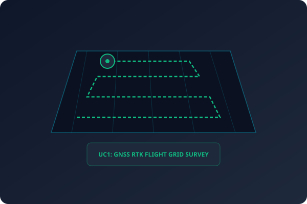
Vệ Sinh Theo Đợt Đã Được Phê Duyệt Cấu Hình
Triển khai làm sạch bằng UAV phun vi hạt tĩnh điện trên diện tích đã xác định sau khi đạt thử nghiệm vùng kiểm soát.
- Input: Kế hoạch bay, nước/dung dịch được duyệt, biên bản GO/NO-GO.
- Phương pháp: Phun theo tuyến tự động + Đo soiling trước–sau.
- Output: Deliverables D1–D5, D7 (Nhật ký UAV & Báo cáo kết quả đợt).
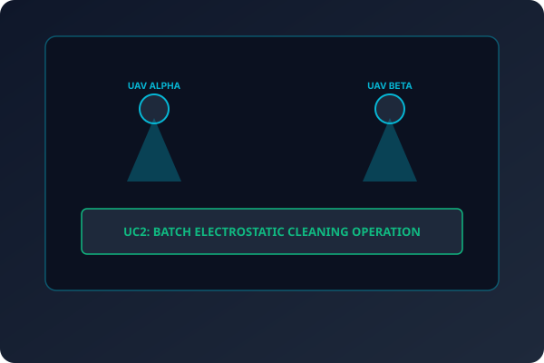
Xử Lý Sau Sự Kiện Bụi Bão Mùa Hoặc Thi Công Lân Cận
Can thiệp kịp thời khi bề mặt pin tích tụ lượng bụi đột biến sau các sự kiện thời tiết hoặc công trình xây dựng xung quanh.
- Input: Báo cáo hiện trường sự kiện, khảo sát bề mặt nhanh.
- Phương pháp: Đánh giá rủi ro -> GO/NO-GO -> Phun khoanh vùng.
- Output: Hồ sơ nhiệm vụ & Báo cáo kết quả khắc phục sự cố.
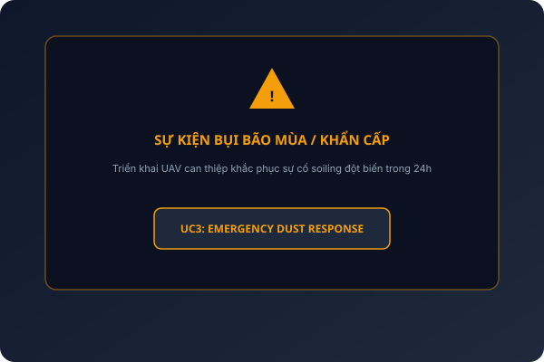
Theo Dõi Xu Hướng Soiling Phục Vụ Lập Lịch O&M
Thu thập và phân tích chuỗi dữ liệu soiling qua nhiều kỳ nhằm tư vấn thời điểm can thiệp kinh tế nhất cho nhà máy.
- Input: Dữ liệu soiling nhiều kỳ, bức xạ, thời tiết mưa/nắng.
- Phương pháp: Phân tích xu hướng theo IEC TS 61724-3.
- Output: Deliverable D6 (Báo cáo xu hướng & Lịch O&M đề xuất).
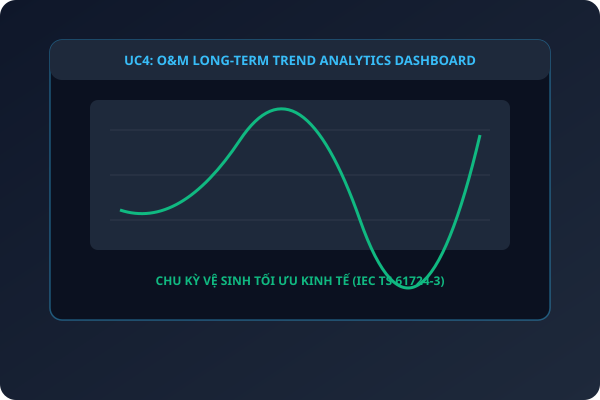
Đánh Giá Tình Trạng Soiling Phục Vụ Thẩm Định Tài Sản
Cung cấp báo cáo độc lập về mức độ bụi bám và tình trạng bề mặt cho nhà đầu tư, chủ sở hữu hoặc bên kiểm toán tài sản PV.
- Input: Hồ sơ nhà máy, yêu cầu đánh giá độc lập.
- Phương pháp: Lập bản đồ soiling ratio trên toàn dự án.
- Output: Báo cáo thẩm định soiling ratio có truy vết minh bạch.
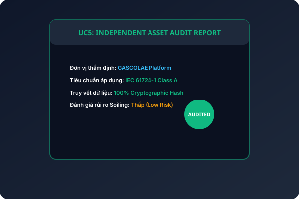
6 Bước Triển Khai Dịch Vụ S0299
Đảm bảo an toàn tuyệt đối cho công trình, tuân thủ pháp lý và đạt chất lượng dữ liệu cao nhất.
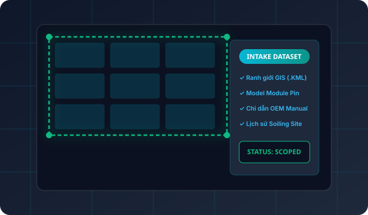
01Bước 1: Tiếp Nhận & Phạm Vi
Thu thập layout ranh giới dự án (.KML), model module pin, manual OEM (Trina, First Solar, Canadian Solar) và lịch sử soiling tại hiện trường.
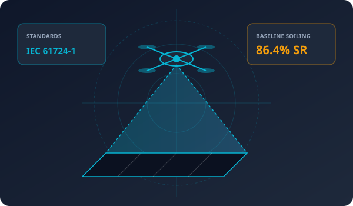
02Bước 2: Khảo Sát & Baseline
Khảo sát hiện trường, thu thập dữ liệu chỉ số Soiling Ratio nền ban đầu (Baseline) và lập thiết kế đường bay tự động theo chuẩn RTK.
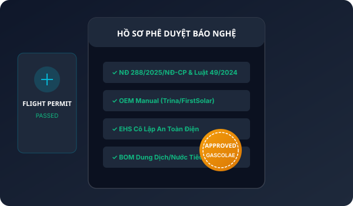
03Bước 3: Duyệt Cấu Hình & Pháp Lý
Technical duyệt BOM dung dịch/nước, Pháp chế xác nhận hồ sơ bay (NĐ 288/2025/NĐ-CP), EHS phê duyệt phương án cô lập an toàn điện.
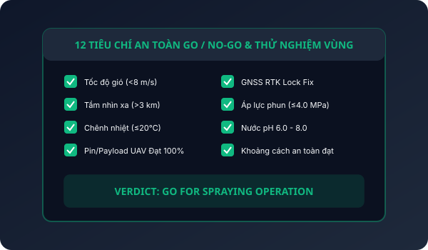
04Bước 4: GO/NO-GO & Vùng Thử
Kiểm tra 12 điều kiện GO/NO-GO khắt khe tại hiện trường (tốc độ gió, nhiệt độ, áp lực). Phun thử nghiệm vùng kiểm soát trước khi nhân rộng.
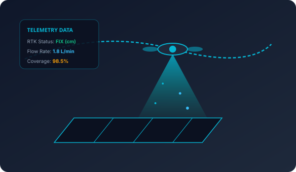
05Bước 5: Phun Tuyến & Thu Dữ Liệu
Vận hành UAV phun vi hạt tích điện theo tuyến tự động đã duyệt. Ghi nhận nhật ký nhiệm vụ telemetry D2 và đo Soiling Ratio sau can thiệp.
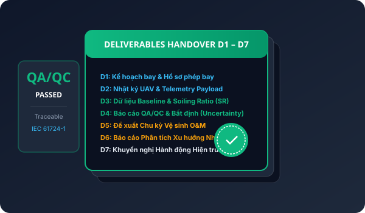
06Bước 6: QA/QC & Bàn Giao
Kiểm tra chất lượng dữ liệu, đánh giá độ không chắc chắn (Uncertainty Analysis) và chính thức bàn giao trọn bộ sản phẩm Deliverables D1–D7.
Lựa Chọn Cấp Độ Dịch Vụ Phù Hợp
Cung cấp theo dải diện tích ($m^2$) với cấu hình kỹ thuật và sản phẩm bàn giao rõ ràng.
Khảo Sát & Baseline
Đánh giá tình trạng soiling ban đầu. Không thực hiện phun làm sạch.
- Khảo sát hiện trường & bề mặt pin
- Đo Soiling Ratio chuẩn IEC 61724-1
- Báo cáo hiện trạng & ranh giới
- Deliverables: D1, D3, D4, D7
Vệ Sinh UAV Theo Đợt
Phun vi hạt tích điện theo phạm vi & cấu hình đã được phê duyệt.
- Tất cả quyền lợi của Level 1
- Thử nghiệm vùng kiểm soát trước khi phun
- UAV phun vi hạt tích điện tuyến tự động
- Đo Soiling Ratio Trước–Sau có truy vết
- Deliverables: D1, D2, D3, D4, D5, D7
Chương Trình O&M Định Kỳ
Theo dõi nhiều chu kỳ và phân tích xu hướng hiệu suất dài hạn.
- Nhiều đợt triển khai Level 2 lặp lại
- Phân tích xu hướng soiling qua các mùa
- Tư vấn điều chỉnh chu kỳ vệ sinh tối ưu
- Full Deliverables: D1 đến D7
Giá chính xác do GASCOLAE Sales/Finance chốt sau khi duyệt ranh giới diện tích ($m^2$) và điều kiện khảo sát thực tế.
Bộ Deliverables Bàn Giao D1 – D7
Báo cáo minh bạch, dữ liệu có truy vết đáp ứng tiêu chuẩn quản lý tài sản PV.
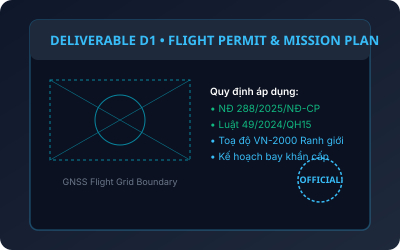
D1 PDF / PERMITD1 • Kế Hoạch Nhiệm Vụ & Hồ Sơ Phép Bay
Hồ sơ hỗ trợ xin phép bay theo NĐ 288/2025/NĐ-CP và Luật 49/2024/QH15. Bao gồm bản đồ VN-2000 và quy trình khẩn cấp.
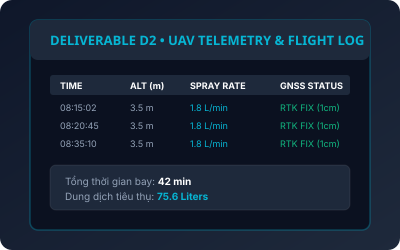
D2 CSV / LOGD2 • Nhật Ký Hoạt Động UAV & Telemetry Payload
Ghi nhận chi tiết thời gian bay, tọa độ GNSS RTK, lượng dung dịch tiêu thụ và nhật ký vận hành hiện trường.
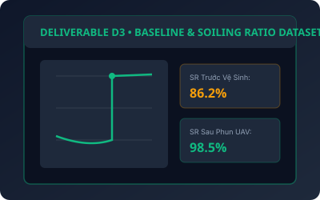
D3 IEC 61724-1D3 • Dữ Liệu Baseline & Soiling Ratio (SR)
Tập dữ liệu đo đạc chỉ số Soiling Ratio thu thập tại hiện trường trước và sau khi làm sạch có truy vết minh bạch.
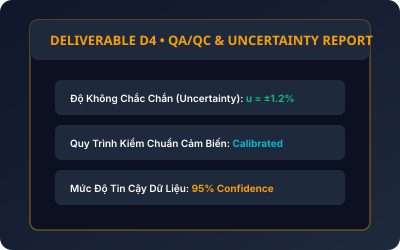
D4 QA/QC REPORTD4 • Báo Cáo QA/QC & Độ Bất Định Uncertainty
Trình bày kết quả quan sát, đánh giá độ không chắc chắn (Uncertainty Analysis) và phương pháp QA/QC minh bạch.
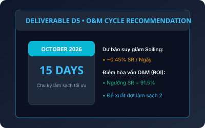
D5 O&M SCHEDULED5 • Khuyến Nghị Chu Kỳ Vệ Sinh O&M Tối Ưu
Bản đề xuất thời điểm làm sạch tiếp theo dựa trên dữ liệu tốc độ bám bụi thực tế và điểm hòa vốn kinh tế tại site.
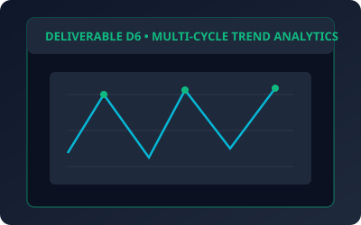
D6 LEVEL 3 TRENDD6 • Báo Cáo Xu Hướng Hiệu Suất Nhiều Kỳ
Tổng hợp chuỗi biến động Soiling Ratio qua nhiều đợt theo dõi hàng năm (Level 3) giúp chủ đầu tư lập lịch O&M dài hạn.
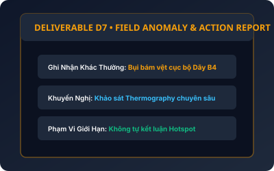
D7 ACTION AUDITD7 • Khuyến Nghị Hành Động Kiểm Tra Chuyên Sâu Tiếp Theo
Ghi nhận các bất thường quan sát được trong phạm vi cảm biến. Cung cấp chỉ dẫn chính xác để đội kĩ thuật khảo sát Thermography chuyên sâu khi cần.
Câu Hỏi Thường Gặp (FAQ)
Thông tin làm rõ về mặt kỹ thuật, an toàn và quy trình triển khai S0299.
S0299 ứng dụng UAV mang hệ phun vi hạt tĩnh điện theo tuyến bay được duyệt, kết hợp khảo sát baseline ban đầu, thử nghiệm khu vực kiểm soát, đánh giá Soiling Ratio trước–sau và xuất báo cáo chuẩn IEC 61724-1.
Bụi bám (soiling) làm ngăn cản bức xạ mặt trời chiếu vào tế bào quang điện. Theo IEA PVPS, tổn thất do soiling trung bình toàn cầu gây giảm 4–7% sản lượng điện năng hàng năm.
Dịch vụ không tiếp xúc cơ học chà xát. Chất lượng nước, pH, độ cứng và áp lực phun đều được đối chiếu tuân thủ nghiêm ngặt manual OEM của hãng sản xuất pin (Trina, First Solar, Canadian Solar) trước khi triển khai.
Không. Mức độ phục hồi thực tế phụ thuộc vào tình trạng soiling tại site và được đo đạc minh bạch qua thử nghiệm vùng kiểm soát. GASCOLAE không tự đưa ra các con số cam kết ảo khi chưa có dữ liệu pilot tại hiện trường.
Có. Hoạt động bay tuân thủ Nghị định 288/2025/NĐ-CP và Luật Phòng không nhân dân 49/2024/QH15. GASCOLAE chuẩn bị bộ hồ sơ kỹ thuật D1 hỗ trợ xin phép, và giấy phép bay do cơ quan quân sự/quản lý có thẩm quyền cấp.
Không! Khi có ánh sáng chiếu vào, các chuỗi module PV vẫn sinh điện áp hở mạch (Open Circuit Voltage). Do đó, quy trình an toàn điện phải được đội EHS/Technical phê duyệt khắt khe, không coi việc ngắt inverter là đã cô lập điện hoàn toàn.
Giá dịch vụ dựa trên diện tích xử lý thực tế ($m^2$), dải công suất và Level lựa chọn. Vui lòng để lại thông tin diện tích và tỉnh/thành tại Form Đặt Lịch, chuyên viên Sales/Finance của GASCOLAE sẽ xác nhận bảng giá thương mại chính thức.